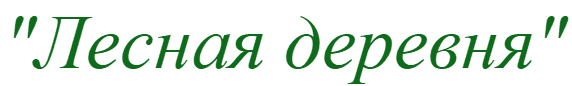
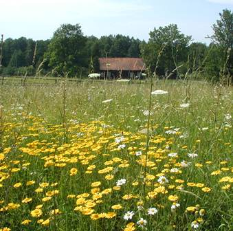
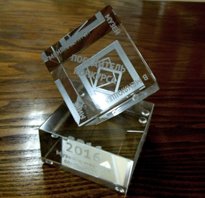
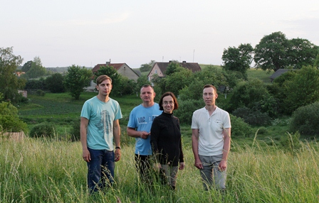

Проект





Кубок победителя конкурса 2016 года
Проект-победитель XIII Грантового конкурса музейных проектов «МЕНЯЮЩИЙСЯ МУЗЕЙ В МЕНЯЮЩЕМСЯ МИРЕ», конкурс проводит
Благотворительный фонд В. Потанина при поддержке Министерства культуры Российской Федерации и оперативном управлении Ассоциации менеджеров культуры (АМК)
Благотворительный фонд В. Потанина при поддержке Министерства культуры Российской Федерации и оперативном управлении Ассоциации менеджеров культуры (АМК)
В 2016 году проект Виштынецкого эколого-исторического музея "Лесная деревня" стал победителем грантового конкурса музейных проектов "Меняющийся музей в меняющемся мире" Благотворительного фонда В. Потанина в номинации "Музей и местное сообщество".
В 2016 году Совет Благотворительного фонда определил 18 победителей конкурса "Меняющийся музей в меняющемся мире". Всего в нём приняло участие 419 заявок из разных регионов России. Номинация «Музей и местное сообщество», в которой выступал наш проект, оказалась самой конкурентной: было выбрано только 4 проекта из 159 заявок.

Команда проекта: Анна Карпенко, Александр Матвеев, Эдуард Барсуков, Алексей Соколов
Виштынецкий эколого-исторический музей» уже второй раз становится победителем этого самого авторитетного конкурса музейных проектов России. Впервые победителем стал проект музея «Виштынецкие сокровища гномов» в 2011 г.
Проект «Лесная деревня» стартует в августе 2016 года и продлится год. Первое мероприятие проекта состоится 6 августа в рамках фестиваля «Соседи» – это будет выставка «Лес и люди» о жизни местного сообщества, которую готовит команда проекта.
Коротко о проекте:
В последние годы интерес к приграничному природному комплексу на стыке России, Литвы и Польши, расположенному на востоке Калининградской области (150 км от Калининграда) Роминтская пуща – Виштынецкая возвышенность, значительно вырос. Роминта становится привлекательной для путешественников из Калининграда и других городов. Одна из основных площадок притяжения - поселок Краснолесье с окрестностями и лесом и Виштынецкий эколого-исторический музей.
Проект запускает серию мероприятий, которые создают зоны контакта между местными жителями и гостями. Проект помогает местным жителям освоить навыки взаимодействия с гостями через освоение и представление местности и ее природных и культурных ресурсов.
Гости получают возможность узнать местность через личный контакт с местными жителями. Музей приобретает поддержку в виде подготовленных проводников из числа местных жителей. Формируется часть экспозиции музея, репрезентирующая местное сообщество.


1 июля 2016 г.